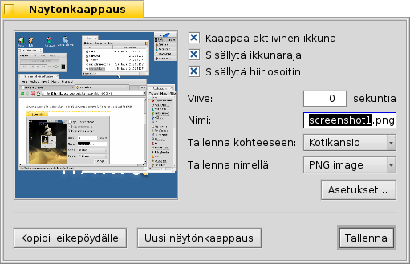

Suomi
Suomi Català
Català Deutsch
Deutsch English
English Español
Español Français
Français Italiano
Italiano Magyar
Magyar Polski
Polski Português
Português Português (Brazil)
Português (Brazil) Română
Română Slovenčina
Slovenčina Svenska
Svenska 中文 ［中文］
中文 ［中文］ Русский
Русский Українська
Українська 日本語
日本語 Näytönkaappaus
Näytönkaappaus
| Työpöytäpalkki: | ||
| Sijainti: | /boot/system/apps/Screenshot /bin/screenshot | |
| Asetukset: | ~/config/settings/screenshot |
Näytönkaappauksia tehdään joko käynnistämällä Näytönkaappaus-sovellus tai painamalla näppäintä PrtScr,

Näytönkaappaus-paneelissa voit vaihdella ottaa kokonäyttökaappauksia tai vain aktiivin ikkunan kaappauksia ja päätää siitä, sisällytetäänkö ikkunarajat ja hiiren osoitin mukaan. Voit myös asettaa viiveen kuvakaappauksen ottamiselle.
Sen alapuolella asetat näytönkaappaustiedoston nimen, muodon ja sijainnin, jota käytetään kun napsautat -painiketta. Levylle tallentamisen sijasta voit päättää myös voidaksesi liittää kaappauksen suoraan toiseen sovellukseen, tai ottaa .
Kaikki asetukset muistetaan seuraavalla kerralla, kun otat näytönkaappauksen, mikä ottaa käyttöön nämä kätevät näppäimistön pikanäppäimet:
| PrtScr | Ottaa näytönkaappauksen viipeellä nolla ja käynnistää Näytönkaappaus-paneelin. | |
| VAIHTO PrtScr | Ottaa näytönkaappauksen hiljaa (avaamatta paneelia) samalla kun sovellus yhä kunnioittaa viimeksi käytettyjä asetuksia. | |
| CTRL PrtScr | Myös tämä ottaa näytönkaappauksen hiljaa talletuilla asetuksilla, mutta tiedostoon tallentamisen sijasta kopioi sen vain leikepöydälle. |
 Näytönkaappauksen tekeminen Pääteikkunasta
Näytönkaappauksen tekeminen Pääteikkunasta
Pääteikkunassa ja skripteissä käytettäväksi on olemassa erikoinen screenshot-näytönkaappaussovellus.
screenshot --help näyttää tutut valitsimet parametreina:
~> screenshot --help
screenshot [OPTIONS] [FILE] Creates a bitmap of the current screen
FILE is the optional output path / filename used in silent mode. An exisiting
file with the same name will be overwritten without warning. If FILE is not
given the screenshot will be saved to a file with the default filename in the
user's home directory.
OPTIONS
-m, --mouse-pointer Include the mouse pointer
-b, --border Include the window border
-w, --window Capture the active window instead of the entire screen
-d, --delay=seconds Take screenshot after the specified delay [in seconds]
-s, --silent Saves the screenshot without showing the application
window
-f, --format=image Give the image format you like to save as
[bmp], [gif], [jpg], [png], [ppm], [tga], [tif]
-c, --clipboard Copies the screenshot to the system clipboard without
showing the application window
Note: OPTION -b, --border takes only effect when used with -w, --window